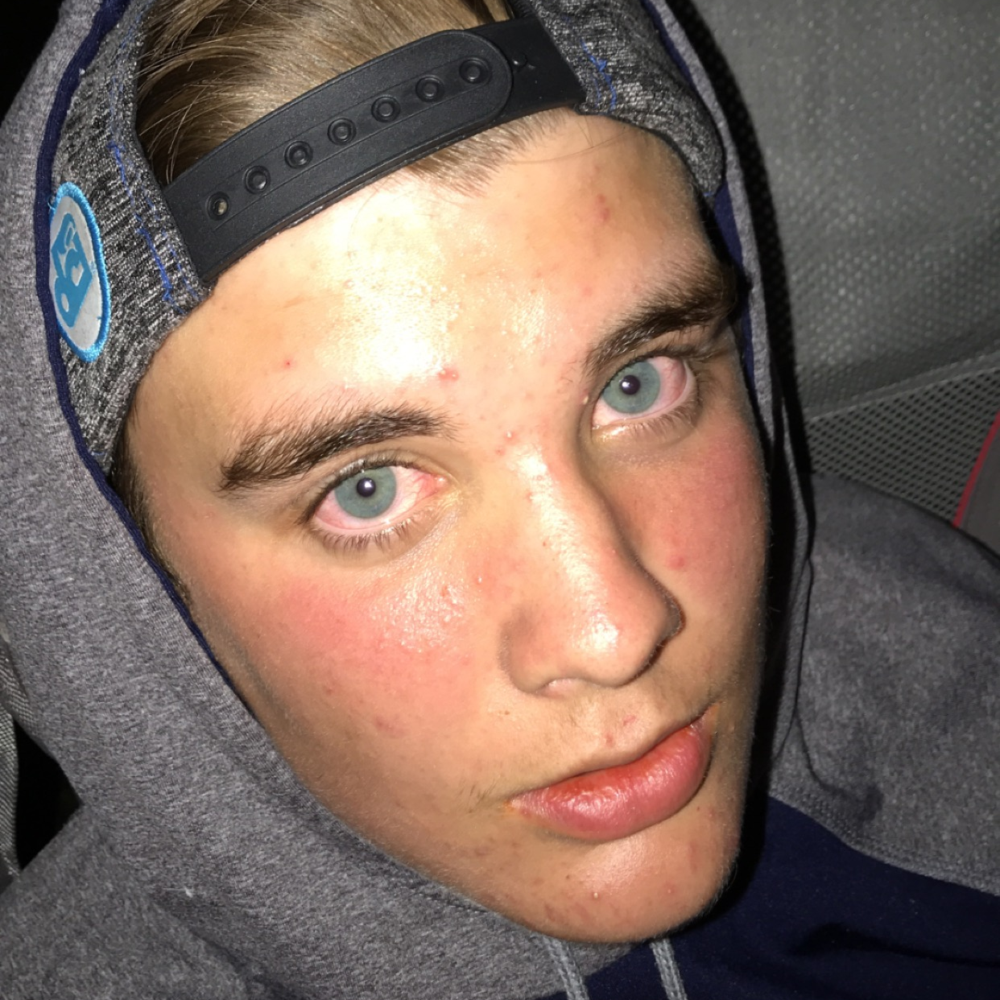
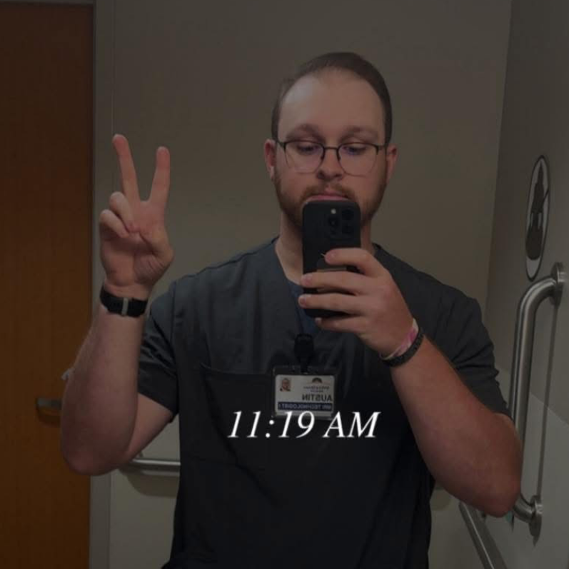

Team of the Week
- Fantasy Points41.50
- Receptions8
- Targets10
- Receiving Yards195
- Touchdowns2
Jon Hurlburt's Geezers n' Beaters were the only team in Beefland to clear 175 points, and it wasn't a one-man show — Jonathan Taylor (29.2), Matthew Stafford (27.98) and Dalton Kincaid (22.5) all turned in top-shelf weeks of their own. But it was Rams wideout Davante Adams who set the tone. On Monday Night Football against the Giants, the 33-year-old caught 8 of 10 targets for 195 yards and two touchdowns — including a 31-yard strike from Stafford — as Los Angeles rolled to a 28-6 win. Adams' workload only grew after Puka Nacua was scratched pregame with a hip injury (more on that below in Most Wanted); either way, it was the best single fantasy performance any Beefland roster produced all week.
Geezers n' Beaters needed every bit of the padding — Brent Hurlburt's Uncle Lamb's put up 138.06 in the loss, the highest score of any team that lost this week. The tightest finish of Week 2 belonged to someone else entirely: Zach Crook's What ACL? held off Adam Schon's newly-renamed Joshin Around by just 10.84 points, a game turned by a career day from Dak Prescott. Full breakdown below in Miracles Come True.
Week 2 Results
Most Wanted
Chug Clause Violators — League Rule, Sec. "Other"

Miracles Come True
Started for Adam Kahler's Njigba's in Paris and turned in the single best game of anyone in Beefland this week — 155 yards and three touchdowns (an 82-yard bomb among them) as Seattle blew out Arizona 31-7. The 49.5-point week was more than double what the matchup needed; Njigba's in Paris had trailed Love Her Big Judkins early before Smith-Njigba turned it into a laugher, a 37.66-point win.
Threw four touchdown passes and added 26 yards on the ground in Dallas' win over Washington, setting the franchise's all-time career touchdown record along the way. For Zach Crook's What ACL?, it was exactly enough — Prescott's 29.76-point week was the difference in the closest game of the week, a 10.84-point escape over Adam Schon's Joshin Around that could easily have gone the other way.
Injury Recap
Jaxson Dart
Dart went down on New York's first drive Monday night against the Rams and didn't return, finishing 0.8 points. An MRI found MCL, PCL and meniscus damage (ACL intact) — the meniscus tear alone means season-ending surgery. Jameis Winston takes over under center for the Giants.
Malik Nabers
The same Monday night game nearly cost the Giants their other star — Nabers landed hard on his shoulder on a contested catch, a scary echo of his LSU shoulder history. He stayed in, but finished a quiet 1.1 points, and was limited in practice this week heading into Sunday.
Jayden Daniels
Daniels dislocated his left elbow on the last play of the first half at Dallas — no fracture, but he didn't return after banking 14.74 points. He's already ruled out for Week 3; Marcus Mariota starts in his place.
DJ Moore
Moore came down hard on an end zone shot and was ruled out before halftime with an AC joint sprain, finishing at -0.1 points. Not considered serious, and he says he's planning to give it a go Sunday.
Saquon Barkley
Barkley left Philadelphia's win at Tennessee with a first-quarter stinger, returned for the second half, but managed just 3 points. He expects to play Sunday, though the Eagles haven't officially cleared him.
Dallas Goedert
The same Eagles-Titans game claimed Goedert too — a knee hit in the second quarter, after just 19 snaps. He'll sit Week 3 with an MCL sprain, though he's avoided IR and could be back sooner than the usual four-week minimum.